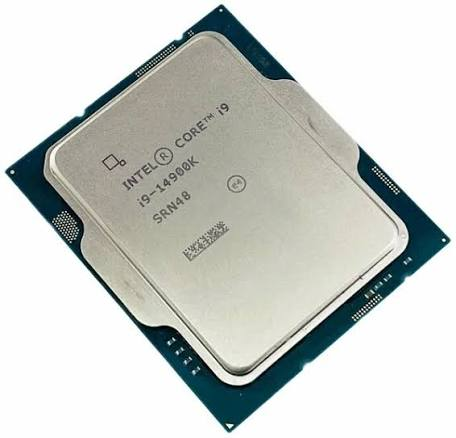
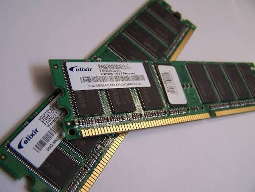
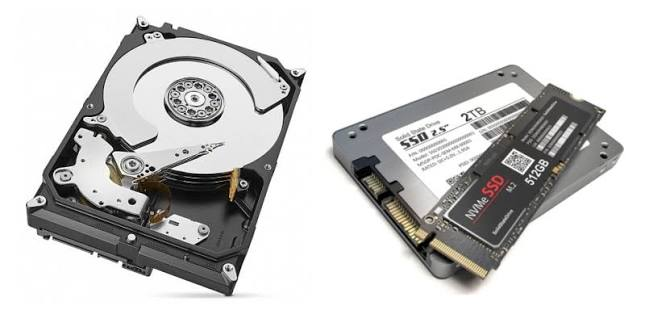
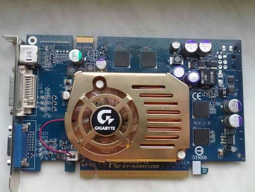
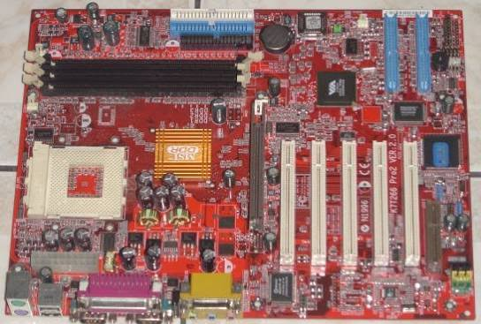
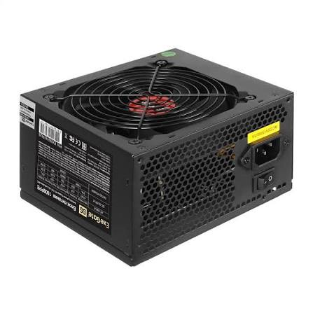

Из чего состоит компьютер
На этом сайте вы узнаете, из каких основных устройств состоит компьютер и зачем они нужны.

Процессор
Процессор — «мозг» компьютера: он выполняет программы и обрабатывает данные. Чем больше ядер и выше частота, тем быстрее компьютер справляется с задачами.

Оперативная память
Оперативная память хранит данные и программы, с которыми компьютер работает прямо сейчас. При выключении питания её содержимое стирается.

Жёсткий диск / SSD
Эти устройства хранят файлы, программы и операционную систему постоянно. SSD работает быстрее и тише, а жёсткий диск дешевле при большом объёме.

Видеокарта
Видеокарта формирует изображение на мониторе. Она особенно важна для игр, видео и 3D-графики.

Материнская плата
Материнская плата соединяет все устройства в единую систему. На ней расположены разъёмы для процессора, памяти, видеокарты и дисков.

Блок питания
Блок питания преобразует ток из розетки и подаёт его на все компоненты. Его мощность должна соответствовать комплектующим.